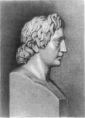

Büyük İskender (MÖ 356-323), Yunanistan’ın dağlık bir bölgesindeki bir krallık olan Makedonya’da doğdu ve ünlü Atinalı öğretmen Aristoteles’ten eğitim aldı. Babası Kral II. Philip, Makedonya’nın topraklarını Atina da dahil Yunanistan’ın antik şehir devletlerinin çoğunu alarak genişletmişti. Philip’in bir tiyatroda suikasta kurban gitmesinin ardından İskender yirmi yaşında babasının tahtına geçti.

Kral olarak İskender, hayret verici bir dizi fethe imza atıp, o zamanlar Akdeniz’in çoğunu kapsayan bir imparatorluk yaratarak babasını aşmıştır. Başka hiçbir kral antik dünyada böylesi geniş bir coğrafyada egemenlik kuramamıştır. İskender’in orduları Makedonya’yı üs alarak Yunanistan, Suriye, Mısır, Mezopotamya ve Pers İmparatorluğu’nu istila ettiler. İskender, kral olduktan altı yıl sonra MÖ 330’da Pers kralı Darius’u yendi. En sonunda krallığını Hindistan’a kadar genişletti. Otuz üç yaşında, Babil antik şehrinde öldüğünde hükümranlığı aniden sona ermiş oldu.
İskender’in yarattığı imparatorluk onun ölümünden sonra devlet yöneticileri arasında paylaşıldı fakat Romalılar tarafından işgal edilene dek yüzlerce yıl varlığını sürdürdü. Fethedilen topraklarda İskender ve orduları farklı gelenekleri olan yeni medeniyetlerle karşılaşmışlardı. Yunanlılar, yenilen milletlerin kültürlerini basit bir şekilde yok etmekten ziyade benimsediler ve Helenizm olarak bilinen yeni, melez bir kültür ortaya çıktı. Tarihte ilk kez güneydoğu Avrupa’nın geniş bir kısmı ile Yakındoğu aynı dili konuşup tek bir kültürel altyapıyı paylaştı. Yunanca yüzyıllarca antik dünyada lingua franca, ortak dil oldu, Yeni Ahit kitapları başlangıçta Yunanca yazıldı. Ordularının hareketiyle ortaya çıkan kültürel maya belki de İskender’in modern dünyaya bıraktığı en anlamlı mirastır.
İskender, bugün hâlâ dünyanın ilgisini çekmektedir. Çağdaş tarihçiler onun acımasız komutanlığını, atlara duyduğu sevgiyi ve felsefe çalışmalarını incelemeye devam etmektedirler. Son zamanlarda İskender’in cinsel eğilimleri de merak konusu olmuştur.
EK BİLGİLER:
1. Babasının fetihleri, küçük bir çocukken İskender’in canını sıkıyordu. Plutarch’a göre, genç İskender, kral olduğunda kendisine fethetmek için çok az yer kalacak diye üzülüyordu.
2. Mısır’ı fethettikten sonra İskender, Akdeniz kıyısında kendi ismini verdiği bir düzine şehirden biri olan İskenderiye’yi kurdu. Yunanlılar İskenderiye’de binlerce parşömen barındıran devasa bir kütüphane inşa ettiler. Birkaç yüzyıl sonra kütüphanenin yanmasıyla beraber antik dünyaya ait birçok önemli bilgi de yok oldu.
3. İskender hırslı bir avcıydı. Günümüzde Özbekistan sınırları içerisinde kalan topraklarda, tek bir av sırasında aralarında aslanlar da olmak üzere 4000 hayvan avladığı söylenir. Antik Yunanlılar hayvanları avlamak için mızrak ve ağ dışında pek az şey kullanırlardı.